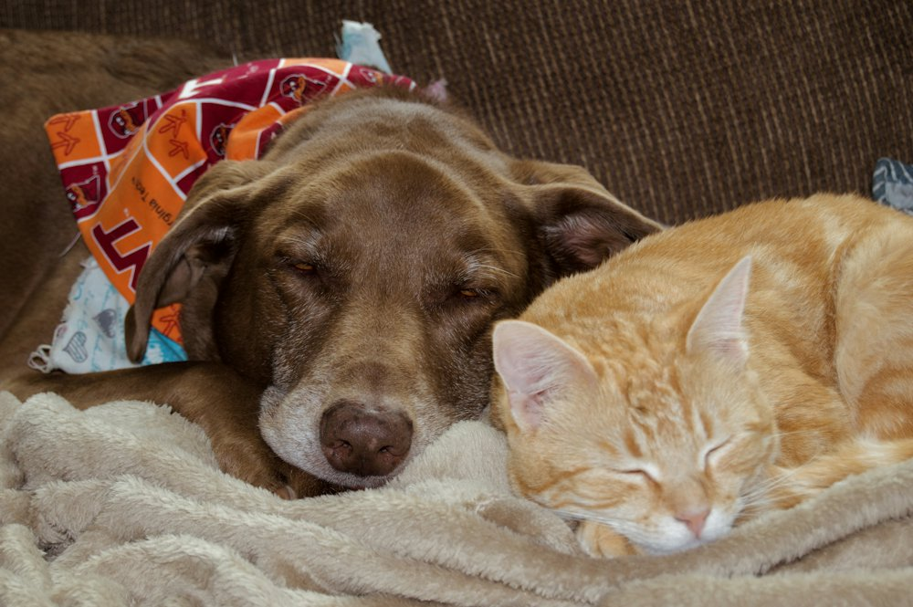

Menginap & dipantau
Pet hotel
Penginapan yang nyaman dan aman untuk kucing dan anjing, dengan pakan premium dan pemantauan langsung oleh tenaga ahli.
- Screening medis sebelum menginap, mencegah penularan
- Laporan video kegiatan harian
- Pakan dan pasir premium
- Kamar kucing dan anjing terpisah